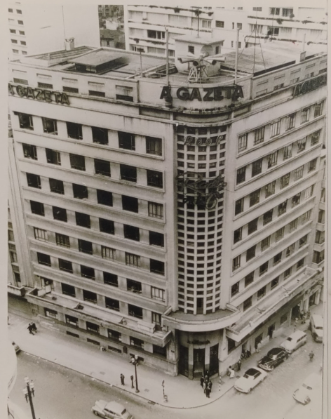
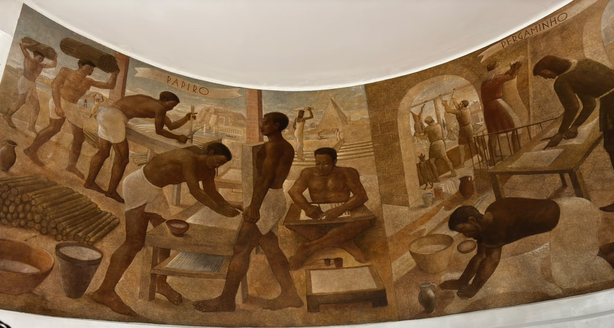
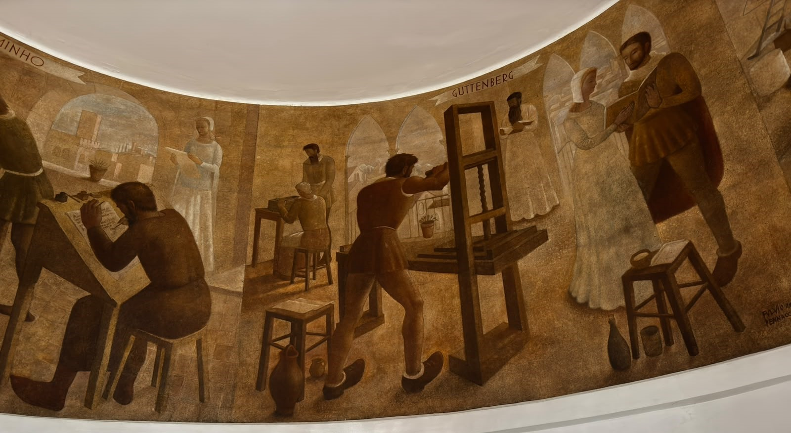
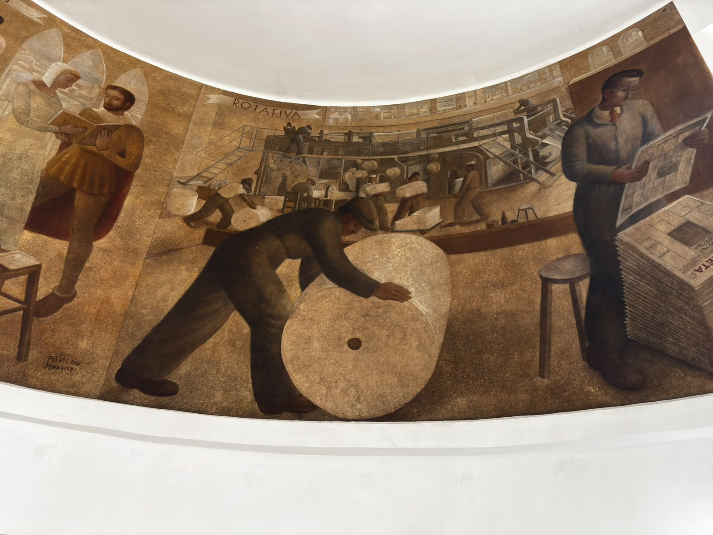
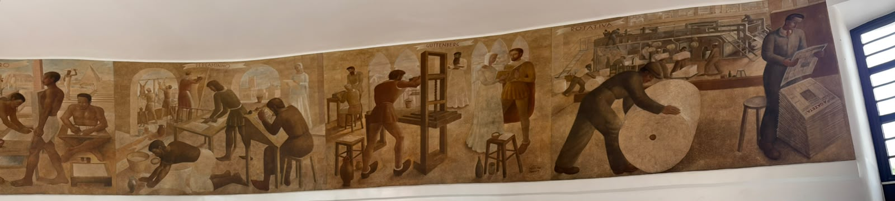
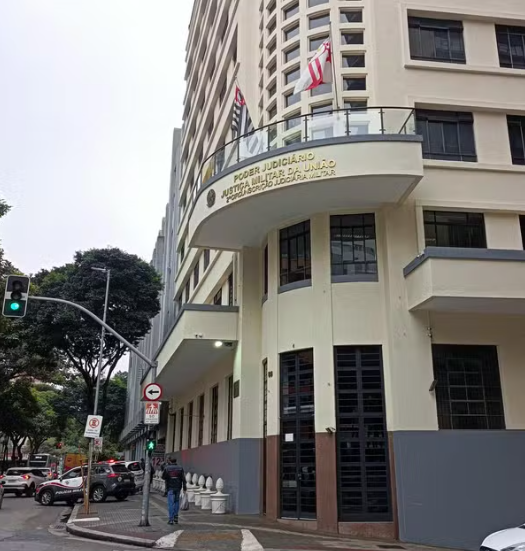

Bem-vindo a esta história
Este edifício, localizado no centro de São Paulo, está ligado à história da imprensa paulista e à memória de Cásper Líbero, jornalista e empresário que marcou o desenvolvimento da comunicação no Brasil.
Ao longo do tempo, o imóvel passou de espaço associado às atividades jornalísticas a uma instalação utilizada pela Justiça Militar da União. Conhecer sua trajetória é também conhecer parte da transformação urbana e institucional da cidade.
Quem foi Cásper Líbero?
1889 — Cásper Líbero nasceu em 2 de março de 1889, em Bragança Paulista, no estado de São Paulo. Formou-se em Direito e construiu carreira no jornalismo.
1918 — Adquiriu o jornal A Gazeta, fundado em 1906. Sob sua direção, o periódico ganhou destaque e passou por um processo de modernização editorial e técnica.
1925 — Foi criada a Corrida Internacional de São Silvestre, uma das iniciativas esportivas mais conhecidas associadas ao seu nome. A primeira edição ocorreu em 31 de dezembro daquele ano.
1943 — Cásper Líbero morreu em 27 de agosto, em um acidente aéreo. Seu legado permaneceu ligado à imprensa, ao esporte e à educação.
Seu testamento deu origem à Fundação Cásper Líbero, responsável por dar continuidade a projetos de comunicação e formação profissional, incluindo a Faculdade Cásper Líbero.
A Gazeta e o Palácio da Imprensa
Fundado em 1906, o jornal A Gazeta tornou-se parte importante da imprensa paulistana. A expansão das atividades jornalísticas exigiu instalações capazes de reunir diferentes etapas da produção de um periódico.

1939 — Foi inaugurado o edifício conhecido como Palácio da Imprensa, associado às atividades de A Gazeta. O imóvel foi concebido para reunir diferentes funções relacionadas à produção e à circulação de notícias.
A arquitetura e a construção
A construção pertence a um período em que os grandes jornais necessitavam de instalações próprias para redação, administração, composição e impressão. O projeto precisou conciliar as atividades jornalísticas com as exigências técnicas da produção gráfica.
O edifício apresenta uma arquitetura de caráter monumental, concebida para representar a importância institucional do jornal e integrar suas diferentes atividades em um mesmo endereço.
O mural de Fúlvio Pennacchi




Um dos elementos artísticos mais importantes do edifício é o mural História da Imprensa, realizado em 1939 pelo pintor ítalo-brasileiro Fúlvio Pennacchi. A obra está localizada no hall de entrada e foi concebida para integrar a arquitetura do prédio.
Com aproximadamente 12 metros de comprimento por 2,5 metros de altura, o mural representa a história da imprensa e constitui parte importante da memória artística do imóvel. A obra foi criada quando o edifício abrigava o jornal A Gazeta.
Da antiga Rua da Conceição à Avenida Cásper Líbero
O endereço do edifício está relacionado às transformações do centro de São Paulo e à memória do jornalista. Após a morte de Cásper Líbero, em 1943, a antiga Rua da Conceição passou a levar seu nome.
Assim, a avenida e o prédio ajudam a preservar a lembrança de uma figura importante na história da imprensa brasileira.
O período da Justiça do Trabalho
Depois de sua fase ligada à imprensa, o edifício passou a abrigar atividades da Justiça do Trabalho em São Paulo. O endereço da Avenida Cásper Líbero, 88, funcionou como fórum trabalhista e recebeu serviços judiciais e administrativos.
Durante esse período, o prédio passou a receber magistrados, servidores, advogados, trabalhadores e outras pessoas que procuravam os serviços da Justiça do Trabalho. Essa utilização representou uma nova etapa na história do imóvel.
2004 — O Tribunal Regional do Trabalho da 2ª Região registrou a transferência de Varas do Trabalho que funcionavam em fóruns da região central para o Fórum Trabalhista Ruy Barbosa, na Barra Funda. Essa mudança marcou uma transição importante na utilização do edifício da Avenida Cásper Líbero.
O edifício e a Justiça Militar da União
Em uma nova etapa de sua trajetória, o imóvel passou a ser destinado à Justiça Militar da União, instituição do Poder Judiciário brasileiro responsável por julgar matérias de sua competência previstas em lei.
2007 — O imóvel foi adquirido para abrigar instalações da Justiça Militar.
2008–2010 — O edifício passou por obras de adaptação e reforma para atender às novas necessidades de uso. A intervenção buscou conciliar a preservação de elementos históricos com as exigências de funcionamento de uma instituição pública.
17 de junho de 2010 — Foi inaugurada a nova sede relacionada à 2ª Circunscrição Judiciária Militar, dando início a uma nova fase de utilização do edifício.
O restauro e a modernização
A adaptação do Palácio da Imprensa para o uso pela Justiça Militar representou o desafio de adequar uma construção concebida para atividades jornalísticas às necessidades de uma instituição do Poder Judiciário, preservando sua identidade histórica.
A preservação da arquitetura
A preservação de edifícios históricos exige atenção à fachada, aos elementos decorativos e aos espaços internos. A adaptação para novos usos precisa conciliar a conservação do patrimônio com as necessidades de segurança, circulação e funcionamento de uma instalação pública.
A recuperação do mural histórico
2014 — A Justiça Militar divulgou o início de trabalhos de restauração do mural História da Imprensa, de Fúlvio Pennacchi, localizado no hall de entrada do edifício. A obra, criada em 1939, é um importante elemento artístico associado à antiga sede de A Gazeta.
A conservação desse mural contribui para manter viva a memória da função original do edifício e sua relação com a história da comunicação em São Paulo.
A adaptação para o uso institucional
A modernização de um edifício histórico também envolve adequações para atender às necessidades de trabalho, tecnologia, segurança e acessibilidade. Essas intervenções devem considerar as características da construção e a preservação de seus elementos de valor histórico.
Dessa forma, o edifício passou a reunir sua herança arquitetônica e cultural com as necessidades de funcionamento da Justiça Militar da União.
O edifício nos dias de hoje
Atualmente, o edifício abriga instalações relacionadas à Justiça Militar da União e continua fazendo parte da paisagem histórica do centro de São Paulo. Sua trajetória conecta a memória da imprensa paulista à sua utilização institucional.

Uma história que continua
Hoje, o edifício reúne diferentes camadas de memória: a história da imprensa, o legado de Cásper Líbero, a transformação do centro de São Paulo e a atuação da Justiça Militar da União.
Preservar e compartilhar essa trajetória permite que funcionários, visitantes e futuras gerações conheçam melhor o patrimônio histórico associado a este endereço.
Fontes para conhecer mais
Consulte instituições e acervos relacionados à história do edifício:
- Fundação Cásper Líbero
- Faculdade Cásper Líbero
- Arquivo da Justiça Militar — 2ª CJM
- STM — Restauração da obra de Fúlvio Pennacchi
- TRT-2 — Transferência de atividades do Fórum Trabalhista em 2004
- Dossiê Cásper Líbero
- Descubra Sampa — Palácio da Imprensa
Página informativa. Para uso institucional, recomenda-se conferir datas, denominações oficiais, autoria do projeto arquitetônico e informações sobre as intervenções no imóvel nos documentos das instituições responsáveis.